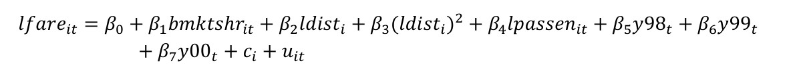

STATA Tutorial – Session 4: Panel Methods & Fixed Effects (Balanced Panel 1997–2000)
📌 Note:
All the full STATA codes used in this tutorial, together with training exercises and questions, are available for download on your Moodle page. Be sure to retrieve them so you can follow along and practice.
Motivation & Learning Goals (Short)
In this session, we work through an applied panel example: what determines airfares on routes over time. You will:
- compute the within (demeaned) transformation by hand (manual FE method);
- estimate Fixed Effects both manually and with
xtreg, fe; - add year dummies (two-way fixed effects);
- interpret coefficients (especially the market share and passengers effects);
- learn why time-invariant regressors (distance) vanish under route FE;
- and compare within R^2 from different specifications.
Data & Model (Reminder)
A panel dataset (or longitudinal dataset) contains observations on multiple entities (e.g., airline routes) across several time periods. This structure allows us to study changes within each entity over time and control for unobserved, time-invariant characteristics. In our case, each route is observed annually from 1997 to 2000, and we model how fares depend on route-specific factors and yearly trends.
You analyze a balanced panel for routes i over years t = 1997–2000. The dependent variable is log of average one-way fare:

Key points:
bmktshr: market share of the biggest carrier on route i in year t (time varying).dist: distance (miles) between origin and destination (time invariant).passengers: average passengers on route i in year t (time varying).y98, y99, y00: year dummies.alpha_i: unobserved route fixed effect.u_it: idiosyncratic error.
0 — Start Clean, Set Working Directory, and Open a Log
clear all
cd "E:\009 INTRODUCTION TO ECONOMETRICS (ET4) - a.a. 2025-26\STATA session 4-20251016"
log using "log_session_airfare_4.log", replace
clear allavoids any leftover objects.log using ... replacekeeps a timestamped record of commands and output.
1 — Load the Dataset and (Optionally) Rename Variables
use "AIRFARE.dta", clear
* optional friendly renames (helps later)
rename id route_id
rename fare avg_fare
rename dist distance_miles
rename passen passengers_day
rename bmktshr bigcarrier_share
rename concen market_conc
After loading, always inspect structure:
describe
summarize
codebook route_id avg_fare distance_miles passengers_day bigcarrier_share
Check now: Are there missing values? Is the panel balanced? Is route_id unique per route? Count observations per route:
bysort route_id: gen n_obs = _N
tabulate n_obs
A balanced panel should show the same n_obs for all routes (expected = 4 years).
2 — Create Clear Logged Variables
Use descriptive names. Log transforms are commonly used for skewed variables and to interpret coefficients as elasticities.
gen log_fare = ln(avg_fare)
gen log_distance = ln(distance_miles)
gen log_distance2 = log_distance^2
gen log_passengers = ln(passengers_day)
Check basic summaries (means, sds, min/max) and look for zeros or negatives before logging:
summarize avg_fare distance_miles passengers_day
count if avg_fare <= 0 | distance_miles <= 0 | passengers_day <= 0
⚠️ If any of these counts > 0, investigate: logs are undefined for non-positive values. Fix or drop problematic observations with care.
3 — Fixed Effects (Manual / “Book” Method)
The manual within transformation is a great exercise to understand FE intuition: remove each route’s mean to eliminate alpha_i.
3.a Compute route means (time averages) for the outcome and time-varying regressors
by route_id: egen fare_mean = mean(log_fare)
by route_id: egen share_mean = mean(bigcarrier_share)
by route_id: egen pass_mean = mean(log_passengers)
(We do not compute a mean for log_distance because it is time-invariant; its within value would be zero.)
3.b Create demeaned (within) variables
Demean each time-varying variable by subtracting the route mean:
gen fare_within = log_fare - fare_mean
gen share_within = bigcarrier_share - share_mean
gen pass_within = log_passengers - pass_mean
Check that the within variables sum to (approximately) zero by route:
by route_id: egen check_sum = sum(fare_within)
summarize check_sum
(You should see near-zero sums — numerical precision may produce tiny nonzero values.)
3.c Estimate OLS on the within-transformed data
Now run the OLS regression using only within variables (this is the manual FE / "book" estimator):
reg fare_within share_within pass_within
Interpretation tasks:
- beta 1 (coefficient on share_within): measures whether increases in the big carrier’s market share (relative to that route’s average share across years) are associated with increases/decreases in log fare (relative to the route’s time mean). A positive beta 1 means that when the big carrier gains share on a route (relative to that route’s mean), fares rise.
- beta 2 (coefficient on pass_within): measures whether increases in log passengers (relative to that route’s mean) affect fares. Positive beta 2 means that more passengers → higher fares (within that route over time); negative would indicate the opposite.
Which variation is used?
This regression uses within-route (time variation) only. Cross-route (between) variation is removed by demeaning.
4 — Manual within + Year Dummies
Year dummies capture common shocks across all routes in a year (e.g., oil price shocks, regulation changes).
reg fare_within share_within pass_within i.year
Questions to answer from output:
- What do the coefficients on
i.yearrepresent? They show average deviations in log fares for each year (relative to the omitted year — usually 1997), after removing route means and conditional on the within variation in share and passengers. In other words, they capture common time effects (year shocks) across routes. - Why add time dummies? To control for factors that change over time and affect all routes (or many routes) simultaneously. Omitting them can bias coefficients if those time shocks correlate with regressors (e.g., market share systematically changes with industry-wide shocks).
- Compare bmktshr (share) coefficient before/after year dummies: Did it change? If yes, that suggests part of the raw within relationship was due to common time shocks correlated with share. If not, the share effect is robust to controlling for year effects.
5 — Fixed Effects Using Stata’s xtreg, fe (the Built-in Within Estimator)
This should give identical estimates (up to numerical precision) to your manual within OLS.
5.a Declare the panel
xtset route_id year
Check for panel settings and whether any gaps exist.
5.b Estimate FE with xtreg
xtreg log_fare bigcarrier_share log_passengers, fe
Compare to manual method:
The xtreg, fe coefficients on bigcarrier_share and log_passengers should match the coefficients from the manual within regression (assuming the same variables and no year dummies). If they match, your manual demeaning was done correctly.
Why add log_distance now?
xtreg log_fare bigcarrier_share log_distance log_distance2 log_passengers, fe
What happens to log_distance and log_distance2?
Because log_distance (and its square) are time invariant for each route, they are perfectly collinear with the route fixed effect alpha i. The within (demeaning) transformation subtracts the route time mean, leaving zero variation for time-invariant regressors — thus xtreg, fe drops them from the estimation (STATA will report they are omitted).
This is why a fixed-effects (within) estimator cannot estimate coefficients on variables that do not vary over time within units.
6 — Fixed Effects + Year Dummies (Two-way FE)
Include both route FE and year FE — a common specification to control for both route fixed heterogeneity and common time shocks.
xtreg log_fare bigcarrier_share log_passengers i.year, fe
6.a Compare R^2 (within) across models
xtreg reports several R^2 measures; the relevant one here is within R^2 (how well the model explains variation within routes).
Compare:
- One-way FE (route only):
xtreg ... , fewithouti.year→ within R^2 = R^2_{oneway}. - Two-way FE (route + year):
xtreg ... i.year, fe→ within R2 = R2_{twoway}.
Interpretation of change in within R^2:
If adding year dummies increases within R^2, common time effects explain additional within-unit variation (e.g., year shocks that differ from route means).
6.b Add distance and distance squared to the model, then explain
xtreg log_fare bigcarrier_share log_passengers log_distance log_distance2 i.year, fe
Here again log_distance and log_distance2 are time invariant and will be dropped by xtreg, fe.
Why? Because the within transformation eliminates time-invariant components — there is no within variation left to estimate their effect.
7 — Answers / Guidance to the Numbered Questions (Compact but Explicit)
| Task | Guidance |
|---|---|
| Load the dataset | Done in §1. |
| Create logs | Done in §2 (log_fare, log_distance, log_distance2, log_passengers). |
| Manual FE (book method) | You computed route means and demeaned time-varying variables in §3.a–§3.b. OLS on demeaned variables in §3.c. |
| Interpretation of beta_1 (share) | If beta_1 > 0, within a route, when the big carrier’s share is higher than its route average, fares tend to be higher. |
| Interpretation of beta_2 (passengers) | As log_passengers changes, beta_2 is an elasticity: e.g., beta_2 = 0.1 means a 1% increase in passengers (within that route over time) is associated with a 0.1% increase in fare. |
| Type of variation | Within-route (time variation) only. |
| Manual FE + year dummies | Year coefficients represent average (common) deviations in log fares in those years (after removing route means). Year dummies are important to control for industry-wide shocks correlated with regressors. |
xtset & xtreg, fe |
xtset route_id year declares the panel. xtreg ... , fe implements the within estimator — results should match the manual method. |
| Why does log_distance disappear? | Because it is time-invariant: the within transform subtracts the route mean and leaves zero for that regressor. |
xtreg + year dummies |
Estimate with i.year. Compare within R^2 of one-way (route only) vs two-way (route + year) — interpret as explained earlier (§6.a). |
Useful Additional Commands & Checks (Practical Checklist)
Compare manual vs xtreg coefficients numerically:
* manual (run earlier)
reg fare_within share_within pass_within
estimates store manual_fe
* xtreg
xtreg log_fare bigcarrier_share log_passengers, fe
estimates store xt_fe
* compare
esttab manual_fe xt_fe, se ar2
Test joint significance of year dummies: (use test after the regression with year dummies)
* after reg fare_within share_within pass_within i.year
testparm i.year
Obtain within R^2 from xtreg output: Look at "R-sq: within" in xtreg output. To get more diagnostics:
xtreg log_fare bigcarrier_share log_passengers i.year, fe robust
If you need distance effect (between effect):
xtreg log_fare log_distance log_passengers bigcarrier_share, be
8 — A Short Troubleshooting Guide
| Problem | Cause / Solution |
|---|---|
log() fails |
Check zeros/negative values with count if var <= 0. |
xtset complains |
Ensure route_id and year are properly formatted (numeric), sorted, and unique per panel/time. |
xtreg drops a variable |
Often because the variable is time-invariant (distance) or perfectly collinear with dummies. |
Manual within not matching xtreg |
Check you demeaned exactly the same variables and that no observations were lost (e.g., due to missing values). |
9 — Save & Close
At the end of your session save the cleaned / transformed dataset and close the log:
save "AIRFARE_session4_working.dta", replace
log close
Summary — What You Should Be Able to Explain After This Session
- How to construct logged variables and why.
- The logic of the within (demeaning) transformation and how to compute it manually.
- That the manual within OLS and
xtreg, feproduce the same estimates for time-varying regressors. - Why time-invariant regressors (distance) disappear in the within estimator and how to obtain between estimates if needed.
- The role of year dummies (two-way FE) and how to interpret the within R^2 change.
- How to interpret coefficients on market share and log passengers as within effects (elasticities or approximate percent changes depending on units).